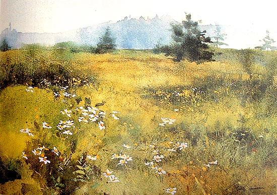

Niebla sobre la isla de Lanes
Por Mario Gámiz Vargas
Philip Jamison nació en 1925 en Philadelphia, Pennsylvania. Es un artista que trabaja principalmente con la acuarela. La inspiración de Jamison proviene principalmente de los alrededores de su casa en West Chester, Pensilvania; y su casa de verano en Vinalhaven, Maine; escenas típicas son paisajes, costas, interiores y arreglos florales. La flor margarita es en particular la favorita de Jamison. Su estilo es sutil y delicado. Atmósferas y detalles dulces. La imagen corresponde a su obra llamada “Niebla sobre la isla de Lanes”.